author：WENG
date：2026-03-22
| Field Name | Description |
|---|---|
| trip_id | 旅程編號 |
| year | 年份 |
| month | 月份 |
| week | 星期幾 (或 該年第幾週) |
| day | 日期 |
| hour | 小時 |
| usertype | 用戶類型 (例如：會員、臨時用戶) |
| gender | 性別 |
| starttime | 開始時間 |
| stoptime | 結束時間 |
| tripduration | 旅程持續時間 |
| temperature | 溫度 |
| events | 事件 (例如：天氣事件、特殊活動) |
| from_station_id | 出發站點編號 |
| from_station_name | 出發站點名稱 |
| latitude_start | 出發站點緯度 |
| longitude_start | 出發站點經度 |
| dpcapacity_start | 出發站點容量 (可停放數量) |
| to_station_id | 抵達站點編號 |
| to_station_name | 抵達站點名稱 |
| latitude_end | 抵達站點緯度 |
| longitude_end | 抵達站點經度 |
| dpcapacity_end | 抵達站點容量 (可停放數量) |
使用機器學習模型預測共享單車的每小時租借需求，並根據預測結果為營運方提供站點調度（再平衡）建議。
參考文獻： "Machine Learning Models for Bike-Sharing Demand Forecasting"
首先將原始的行程級資料（原為每一筆為一次租借）聚合成小時級別的統計資料，透過starttime和stoptime決定出發次數(計算每小時從站點出發的次數)和抵達次數(計算每小時抵達站點的次數)
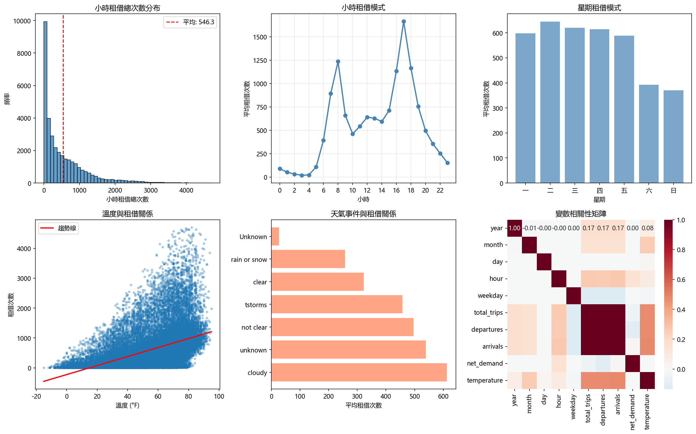
小時租借次數分布
可看出租借次數分布，呈現右偏，並無極端高/低需求的小時，可以看到0-1小時的租借時間是次數最多的。
小時租借模式
觀察一天當中 各小時的平均租借次數 變化趨勢，可看出哪些時段為租借高峰（如通勤時段），哪些時段為離峰（如深夜），早上8點和晚上5點分別為兩個高峰時段，正好為上下班的時間。
星期租借模式
一週當中各星期的平均租借次數變化，可比較平日與週末的租借行為差異，判斷是否為「通勤型」或「休閒型」使用模式，發現周末的使用頻率較低。
溫度與租借量關係
探討 溫度（°F）與租借量的相關性，散點圖顯示，溫度在約 68-77°F（約20-25°C）時，租借需求達到高峰。
天氣事件與租借量關係
可判斷惡劣天氣（如 rain、storms）是否顯著降低租借量，晴天（clear）租借量最高，雨天（rain）與暴風雨（storms）租借量明顯下降。
分別做了：
時間週期編碼 (Sin/Cos)：將 hour, weekday, month 這類循環變量轉換為正弦和餘弦函數值，以保留其循環特性（e.g.23點和0點在數值上很遠，但時間上很近）。
類別變數編碼：對簡化後的天氣事件進行 One-Hot 編碼，轉換為數值特徵。
衍生特徵建立：
temp_celsius_squared：捕捉溫度與租借量之間的非線性關係。
is_weekend：標記是否為週末。
is_peak：標記是否為尖峰時段（7-9點或17-19 點）。
延遲特徵 (Lag Features)：創建了過去1小時lag_1、24小時lag_24（昨天同一時間）和168小時lag_168（上週同一時間）的 total_trips 值，讓模型可以學習到週期性的模式。
滾動平均特徵：計算過去幾小時的平均租借量，平滑數據，捕捉短期趨勢。
計算活躍站點數(本文重點)：透過計算每個群集在過去7天內有活動的站點數量有多少個站點至少有一次租借或歸還記錄，活躍站點數反映了一個區域的供需潛力。
共享單車系統可能擁有數百甚至上千個站點，如果為每個站點單獨建立預測模型，計算量過大且數據稀疏。聚類的目的是將地理位置相近的站點群集為一組，這樣做的好處是同一區域內的站點可能有相似的需求模式(e.g.，商業區早上需求高，住宅區晚上需求高)，這樣可以為每個區域建立同一個預測模型，而不是為數百個站點建立模型後續的車輛調度也可以基於此進行。
用K-means 聚類演算法分析：
k=2: Silhouette Score = 0.4267
k=3: Silhouette Score = 0.4433
k=4: Silhouette Score = 0.4597
k=5: Silhouette Score = 0.4234
k=6: Silhouette Score = 0.4106
k=7: Silhouette Score = 0.4152
k=8: Silhouette Score = 0.4361
k=9: Silhouette Score = 0.4428
k=10: Silhouette Score = 0.4286
k=11: Silhouette Score = 0.4136
k=12: Silhouette Score = 0.4040
k=13: Silhouette Score = 0.3901
k=14: Silhouette Score = 0.4033
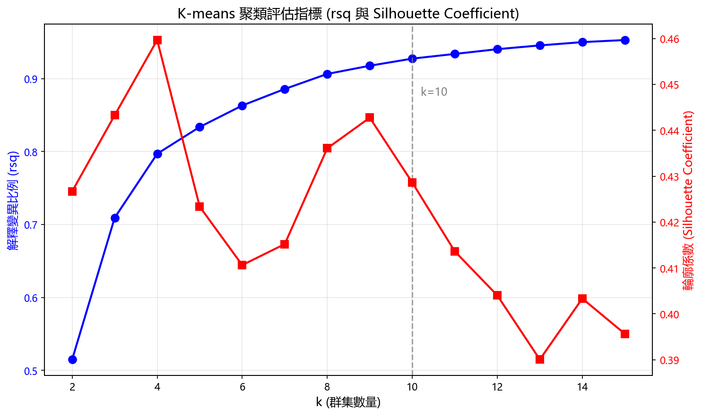
結合rsq和輪廓係數決定k值，儘管 k=4 在輪廓係數上表現最佳，但基於城市結構複雜性，因為芝加哥作為大型城市，不同區域（市中心、住宅區、工業區、大學區、公園區等）的需求模式差異很大，四個群集可能無法充分捕捉這些差異，另外，從營運角度，多個區域比4個區域能提供更精細的調度指導，最後選擇 k=9，輪廓係數佳，且能劃分不同區域需求。
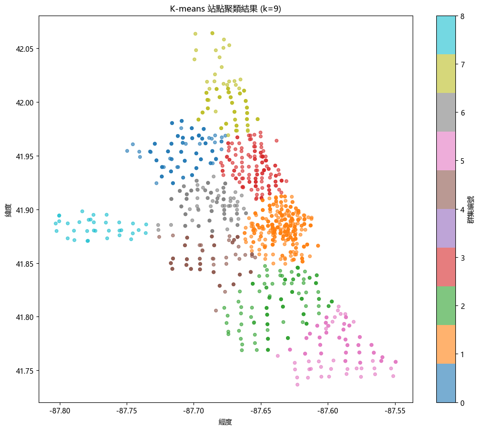 |
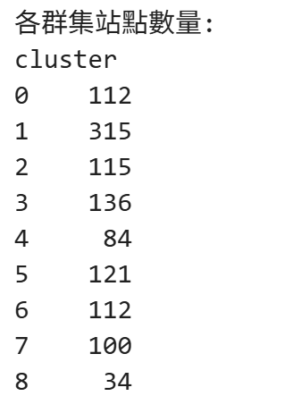 |
Cluster 1 站點最多（315個），經緯度也在中心點，可能是市中心區域。
Cluster 8 站點最少（34個），經緯度也偏離群集，可能是偏遠郊區。
原本資料是站點式的，轉變為區域級的資料，並記錄得到
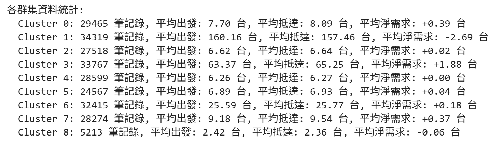
也可以得到：
| 指標 | 代表的意義 | 營運含義 |
|---|---|---|
| 平均出發高 | 該區域是「車輛起點」 | 需要更多空車位，需提前調度車輛來填補 |
| 平均抵達高 | 該區域是「車輛終點」 | 需要更多空車位供歸還，需及時調出車輛 |
| 出發 ≈ 抵達 | 區域整體平衡 | 日常需求平穩，正常維護即可 |
| 出發 > 抵達 | 車輛淨流出 | 需要外部調入車輛 |
| 出發 < 抵達 | 車輛淨流入 | 可以調出車輛支援其他區域 |
特徵：時間、天氣、週末、尖峰時段（不含 lag 特徵）
特徵：使用所有可用特徵
特徵：LR 所有特徵 + lag_1, lag_24, lag_168
公式：
Trip_N = β0 + β1·Trip_lag1 + β2·Trip_lag24 + β3·Trip_lag168
+ β4·Month + β5·Day + β6·Hour + β7·Events
+ β8·Temperature + β9·Active_Station_N
使用10折交叉驗證，不用隨機切分，是因可以在集群中看到某些集群的資料集部分較少，若用隨機切分可能發生模型無法訓練到偏遠地區的資料，另外不用LOOCV是因為資料量有九百多萬筆，需要的電腦性能過高而無法負擔
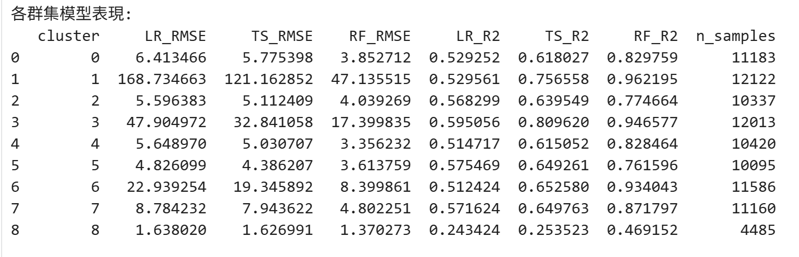
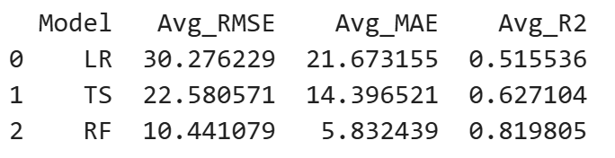
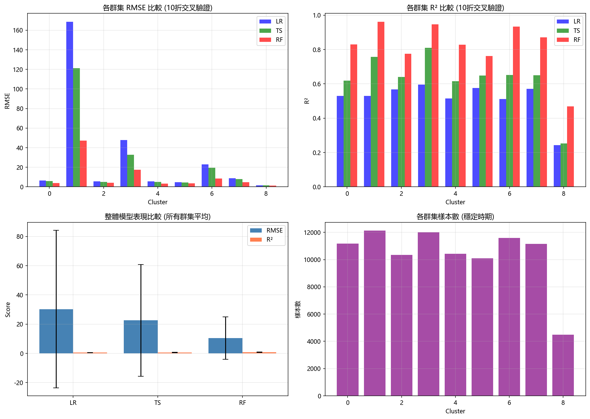
RF 模型在各群集中表現最佳，RMSE 最低，R² 最高，因為RF能捕捉非線性關係，對異常值穩健
TS 模型 (包含 lag 特徵) 表現優於 LR 模型
LR 模型 (不含 lag 特徵) 表現最差
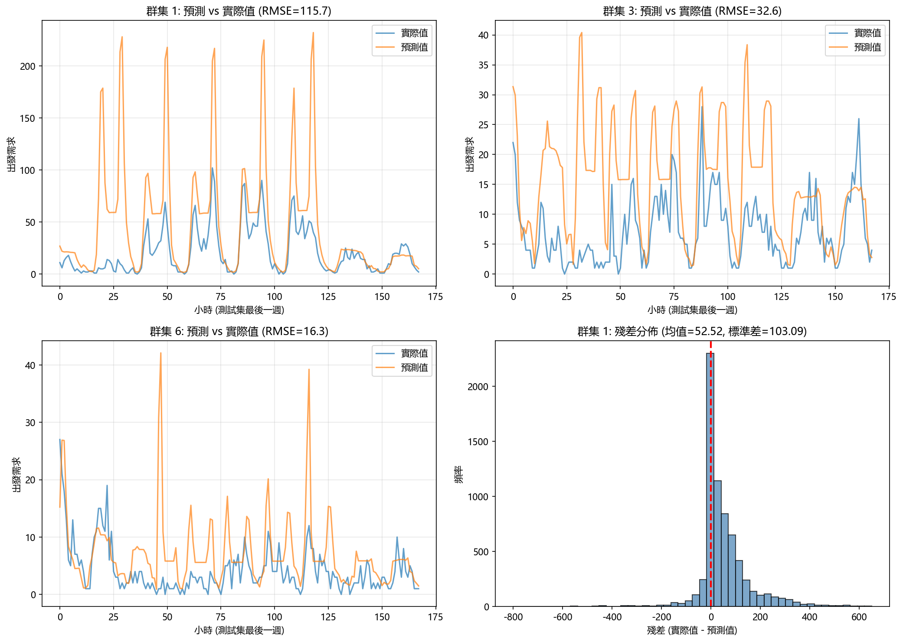
透過集群層級的淨需求預測（到達減去出發），可有效識別即將出現單車短缺或過剩的區域，可提升服務可靠性與使用者滿意度
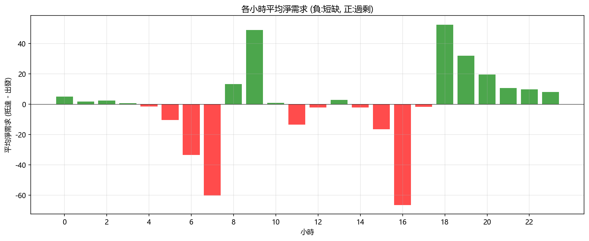
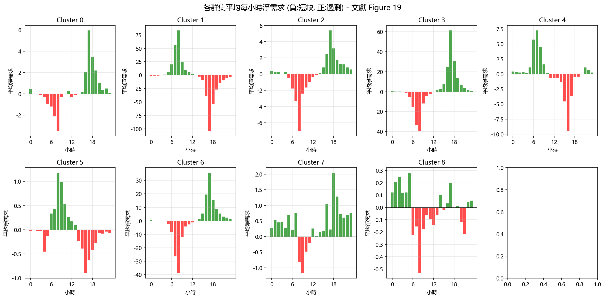